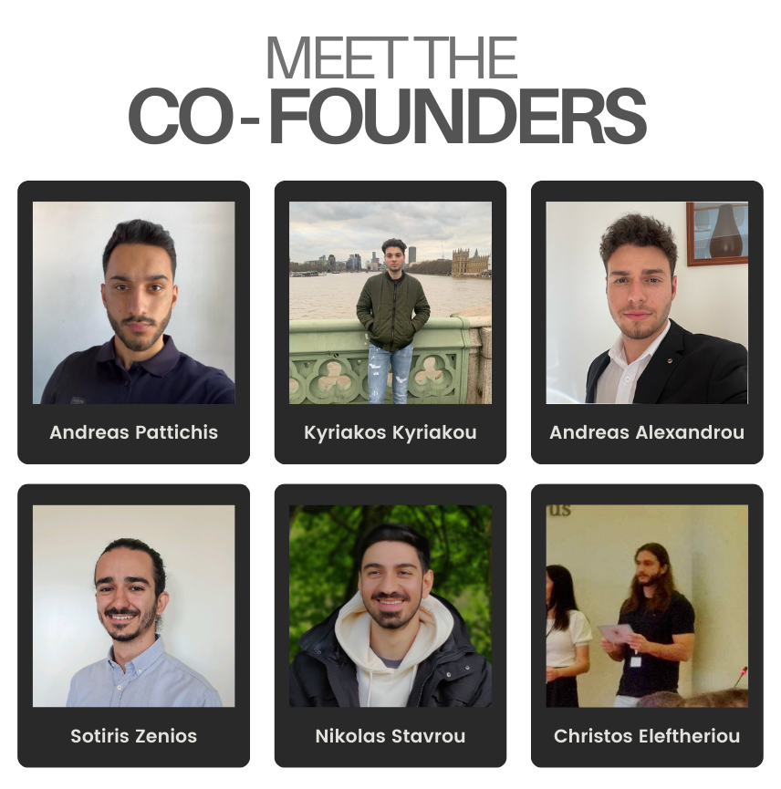

This document outlines our company's core ideas, vision, and strategy to revolutionize the farming industry through innovative AI solutions. It is a conceptual guide that explains our approach to integrating AI into agriculture, starting with our first product, Calv Alert, and expanding into a suite of future products designed to address various challenges in farming.
We are a team of six passionate AI engineers with strong backgrounds in computer science and artificial intelligence. Our expertise and international experiences empower us to develop innovative solutions for real-world challenges, particularly in agriculture. Our goal is to transform traditional industries using AI, starting with farming.
| Name | Role | Education | Current Status | Experience |
|---|---|---|---|---|
| Andreas Pattichis | Co-Founder & CEO/Project Manager | Bachelor’s in Computer Science. Currently in the final year of a Master’s in AI at Barcelona (EMAI Programme), studying with a fully funded scholarship. | Leading the strategic direction and project management of the company. | Extensive background in AI with a focus on Medical Imaging. Full stack development experience in a corporate environment. Strong creative and entrepreneurial skills demonstrated in past projects. |
| Kyriakos Kyriakou | Co-Founder & CTO | Bachelor’s in Computer Science. Master’s in AI from the University of Edinburgh. | Leading the technical direction of the company. | Specialization in AI, software engineering, and data management with extensive knowledge gained through academic and professional experience. Consulting experience from both current and past roles. |
| Andreas Alexandrou | Co-Founder & AI/Software Engineer | Bachelor’s in Computer Science. Currently in the final year of a Master’s in AI at Utrecht University. | Focused on advancing the company’s computer vision capabilities and leading the development of vision-based AI products. | Extensive experience in computer vision projects. Previous work experience in Analytics. Showcased innovative problem-solving skills and creativity across multiple projects. |
| Nikolas Stavrou | Co-Founder & AI/Software Engineer | Bachelor’s in Computer Science. Currently in the final year of a Master’s in AI at Utrecht University. | Contributing to the development and implementation of AI solutions, focusing on software engineering and system integration. | Involvement in numerous AI and software engineering projects. Consulting experience from past role. Strong problem-solving skills, with a notable ability to research, learn, and apply new concepts efficiently and in-depth. |
| Sotiris Zenios | Co-Founder & AI/Software Engineer | Bachelor’s in Computer Science. Currently in the final year of a Master’s in AI at Utrecht University. | Specializing in AI-driven software development, working on the integration of AI technologies into practical applications. | Participation in a variety of AI and software engineering projects. Full stack development experience in a corporate environment. Consistent adaptability skills in fast-paced environments. |
| Christos Eleftheriou | Co-Founder & AI/Software Engineer | Bachelor’s in Computer Science. Currently completing a Master’s in AI at the University of Cyprus, expected December. | Focused on refining AI algorithms and ensuring the robustness of the company’s software solutions. | Involvement in numerous AI and software engineering projects. Experience with data science through large projects like his thesis. |
We understand that building a successful company requires a well-rounded team. As we grow, we plan to bring in or collaborate with experts in marketing, design, and business development to complement our strong technical foundation. These additional skills will ensure that our innovative solutions reach the right audiences effectively.
We are also establishing relationships with industry veterans and advisors who provide valuable insights and mentorship, guiding us through the challenges of scaling a startup. Our team is highly adaptable, eager to learn, and committed to continuous improvement, making us well-prepared to navigate the complexities of building and scaling a successful company.
Our journey is driven by a commitment to expanding our knowledge and expertise in all necessary areas, reflecting a growth mindset that is essential for long-term success. We believe in the power of continuous learning, and our team is dedicated to acquiring the skills and knowledge needed to not only excel in our technical domain but also to grow as leaders, innovators, and entrepreneurs.
The agricultural industry in Cyprus faces several challenges, including employee management, high costs, and limited technology adoption. We aim to address these issues by developing AI-driven solutions that are affordable, scalable, and targeted to meet the specific needs of small to medium-sized farms.
Introducing Our AI Solutions: We aim to revolutionize farming by developing a suite of AI-driven products that are designed to meet the needs of farms of various sizes that are focused on profitability and operational efficiency. Our solutions are not just about introducing new technology; they are tailored to complement existing systems, focusing on solving specific, often overlooked issues that are critical to farm operations. Our AI-driven solutions are affordable, scalable, and designed to address the unique challenges that farms face today—challenges such as effective employee management, precise monitoring of livestock, and reducing the burden of constant supervision. By targeting these pain points, we enable farmers to enhance efficiency, improve animal welfare, and reduce operational costs, all in a cost-effective manner that integrates seamlessly with their current operations.
We are already in collaboration with Smyrillis Jersey Farm, one of the most technologically advanced farms in Cyprus, to test and perfect our Calv Alert system. This partnership provides a valuable opportunity to refine our product in a real-world setting, with the potential to expand our collaboration once the product proves successful.
Calv Alert is just the first step in our journey to revolutionize agriculture with AI. We have a bold vision for the future, where technology seamlessly integrates into every aspect of farm management, empowering farmers to operate more efficiently, sustainably, and profitably. Here’s a glimpse of what’s on the horizon:
Each of these products will build on the success of Calv Alert, expanding our impact across the agricultural sector. By continuously innovating and responding to the needs of farmers, we aim to create a comprehensive suite of AI-driven tools that drive the future of farming.
We envision a central hub platform, accessible via both web and mobile apps, where clients can control and manage all the AI-driven products they have from our company. This platform will allow farmers to smoothly switch between different tools based on their immediate needs, providing a seamless and integrated farm management experience.
Vision: "To become a global leader in AI-powered agricultural solutions, transforming the farming industry by making advanced technology accessible and practical for every farm, regardless of size."
Mission: "Our mission is to integrate AI into everyday farming practices to enhance productivity, ensure animal welfare, and make farming more sustainable."
Product Strategy: Starting with Calv Alert, our strategy is to develop and refine products that address specific needs within the farming industry. Each product is designed to integrate seamlessly into a broader suite of AI-driven tools, offering comprehensive solutions for farm management.
Competitive Advantage: Our competitive advantage lies in our ability to deliver targeted AI solutions that are both cost-effective and easy to implement. Our collaboration with Smyrillis Jersey Farm provides a strong validation of our approach and opens the door to further opportunities in the agricultural sector.
Client Value Proposition: We offer farmers peace of mind with AI solutions that are non-invasive, cost-effective, and easy to integrate into their existing workflows. Our products ensure both animal welfare and operational efficiency, making farming more manageable and sustainable.
Environmental Impact: Our solutions promote sustainable farming practices by reducing waste, improving resource management, and minimizing the environmental footprint of agricultural operations.
Summary: Our company is dedicated to transforming the farming industry through AI-driven solutions that are accessible, practical, and impactful. Starting with Calv Alert, we aim to build a comprehensive suite of tools that address the unique challenges faced by farmers today.
Next Steps: We will continue to develop and refine Calv Alert in collaboration with Smyrillis Jersey Farm, while also exploring opportunities to develop additional products that can further enhance farm management and sustainability.
Call to Action: We invite potential partners, investors, and collaborators to join us on this journey as we work to bring the future of farming into the present with innovative AI solutions.
For more information or to discuss potential partnerships and collaborations, please contact us at: